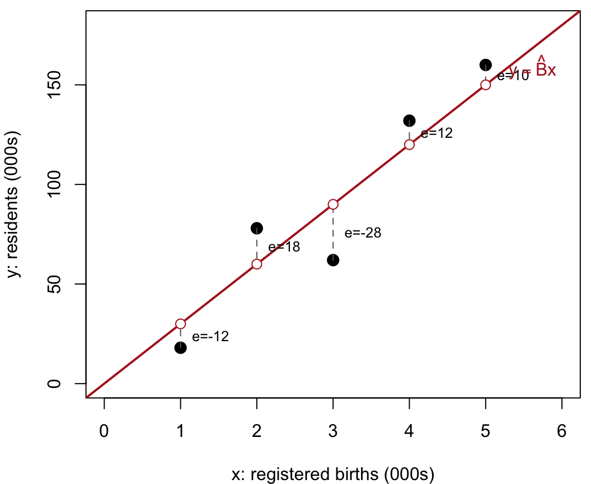
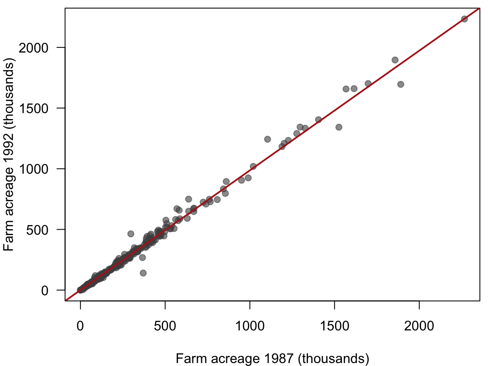
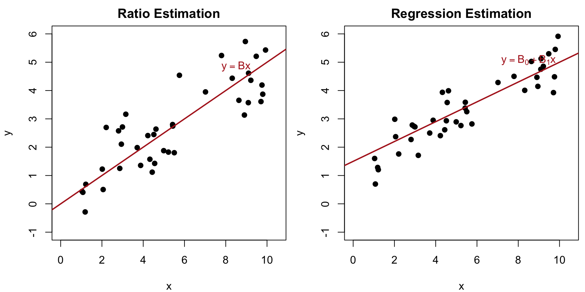
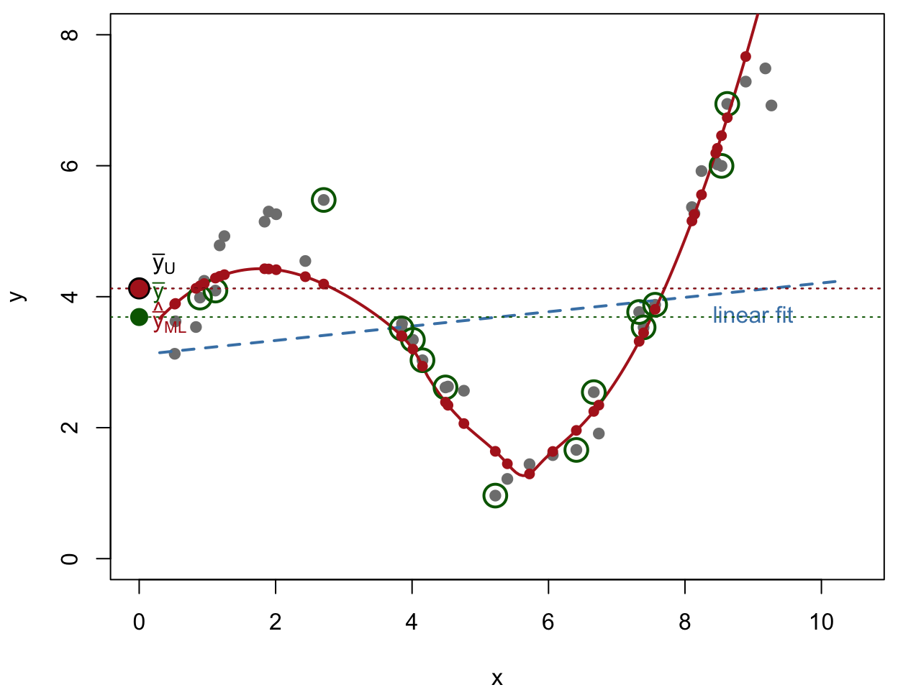

Code
plot_ratio_concept()
When auxiliary information (a variable \(x\)) is highly correlated with our target variable of interest (\(y\)), we can use ratio or regression estimation to improve precision without increasing the sample size. We can also use auxiliary population structures to adjust our estimates after the fact via post-stratification, or estimate means for specific sub-populations (domains).
Throughout, \((x_i, y_i)\), \(i = 1, \ldots, n\), is an SRS of size \(n\) from a population of \(N\) units, and \(\bar x_U\) (equivalently \(t_x = N\bar x_U\)) is known. Each topic below has the same layout: a theory part that states the estimator, explains where it comes from and gives its standard error, followed by worked examples with data.
The topics are less separate than they look. The ratio, regression and post-stratified estimators each fill in a prediction \(\hat y_i\) for every unit of the population and average them; they differ only in the auxiliary information used to form \(\hat y_i\), and a domain mean is itself a ratio estimator. The regression and post-stratification sections make this explicit, and the post-stratification section ends with a table that puts the estimators side by side.
We begin by loading the necessary libraries, including gt for formatting mathematical tables, and defining our custom functions for Ratio, Regression, Domain, and Post-stratified estimation. We also define a versatile gt helper to render our estimation outputs cleanly.
The estimating functions used throughout this book (including reg_est, ratio_est, domain_est, srs_est, and the format_est_gt table-formatting helper used below) live in a single shared file, samplingestimate.r, which we source below.
For post-stratification, we reuse the shared str_est() stratified estimator, but we plug in the expected sample sizes \(n_h = n \times \frac{N_h}{N}\) instead of the actual observed random \(n_h\).
The full source of samplingestimate.r is listed in Appendix C.
For ratio estimation to apply, two quantities \(y_i\) and \(x_i\) must be measured on each sample unit; \(x_i\) is often called an auxiliary variable or subsidiary variable. In the population of size \(N\), \[ t_y = \sum_{i=1}^N y_i, \qquad t_x = \sum_{i=1}^N x_i, \] and their ratio is \[ B = \frac{t_y}{t_x} = \frac{\bar y_U}{\bar x_U}, \qquad \text{so that} \qquad \bar y_U = B\cdot\bar x_U . \] Ratio and regression estimation both take advantage of the correlation of \(x\) and \(y\) in the population; the higher the correlation, the better they work.
If an SRS is taken, natural estimators for \(B\), \(t_y\) and \(\bar y_U\) are \[ \boxed{\hat B = \frac{\bar y}{\bar x} = \frac{\sum_{i=1}^n y_i}{\sum_{i=1}^n x_i} = \frac{\hat t_y}{\hat t_x}, \qquad \hat t_{yr} = \hat B\, t_x = N\,\hat{\bar y}_r, \qquad \hat{\bar y}_r = \hat B\, \bar x_U}, \] where \(t_x\) and \(\bar x_U\) are assumed known. This is the key requirement for ratio estimation: we need to know the population total or mean of the auxiliary variable \(x\) in advance. The ratio estimator is slightly biased, but the bias is negligible when \(n\) is large.
There is a useful way to read these formulas. Once \(\hat B\) is estimated, form the fitted value \(\hat y_i = \hat B x_i\) for every unit in the population, using its known \(x_i\). Summing or averaging these over the population recovers the ratio estimators: \[ \hat t_{yr} = \sum_{i=1}^N \hat y_i = \hat B\, t_x , \qquad \hat{\bar y}_r = \frac1N\sum_{i=1}^N \hat y_i = \hat B\, \bar x_U . \]
Figure 5.1 shows this for a small population. The grey points are the population, whose \(x_i\) are known, and the green circles are an ordinary SRS. The red line \(\hat y = \hat B x\) is fitted from the sample, and the red points are the fitted values for every unit.
plot_ratio_concept()This sample happens to have \(\bar x > \bar x_U\), so the naive \(\bar y\) (green) lands well above \(\bar y_U\). The ratio estimator corrects for that through the known \(\bar x_U\): it is the height of the red line at \(x = \bar x_U\), so \(\hat{\bar y}_r\) (red) is close to \(\bar y_U\) (black). Averaged over samples both are (essentially) unbiased, but \(\hat{\bar y}_r\) varies far less.
Ordinary SRS estimation of a mean or proportion is a special case of ratio estimation, obtained by setting \(x_i = 1\) for every unit: then \(\bar x_U = \bar x = 1\), \(t_x = N\), \(B = \bar y_U\) and \(\hat B = \bar y\), so \(\hat{\bar y}_r = \bar y\) (including \(\hat p\)) and \(\hat t_{yr} = N\bar y\).
Genuine ratio estimation needs an \(x\) whose population total is known more easily than that of \(y\). Three typical situations:
In large samples the bias of \(\hat{\bar y}_r\) is negligible relative to its variance, so \(\text{MSE}(\hat{\bar y}_r) \approx V(\hat{\bar y}_r)\). To understand the variance, look at the estimation error, \[ \hat{\bar y}_r - \bar y_U = \frac{\bar y}{\bar x}\bar x_U - B\bar x_U = \frac{\bar x_U}{\bar x}\left(\bar y - B\bar x\right), \] where the second form comes from factoring out \(\bar x_U/\bar x\). Define the population residual of each element as its deviation from the true population line, \[ d_i = y_i - B x_i \qquad (B = t_y/t_x). \] Then \(\bar y - B\bar x\) is simply the sample mean \(\bar d\) of these residuals, so the error of the estimator is the scaled sample mean of the residuals. Squaring and taking expectations, \[ \text{MSE}(\hat{\bar y}_r) \approx \left(\frac{\bar x_U}{\bar x}\right)^2 V(\bar d), \qquad V(\bar d) = \left(1 - \frac nN\right)\frac{S_d^2}{n}, \] because the \(d_i\) are fixed population values, so \(\bar d\) is an ordinary sample mean under SRS.
In practice \(B\) is unknown, so the \(d_i\) cannot be computed. We replace \(B\) by \(\hat B\) and use the sample residuals from the fitted line, \[ e_i = y_i - \hat B x_i, \qquad s_e^2 = \frac{1}{n-1}\sum_{i=1}^n e_i^2 . \] Substituting \(s_e^2\) for the unknown \(S_d^2\) gives the variance estimators \[ \boxed{\begin{aligned} \hat V(\hat B) &= \frac{1}{\bar x^2}\left(1 - \frac nN\right)\frac{s_e^2}{n}, \\ \hat V(\hat{\bar y}_r) &= \bar x_U^2\,\hat V(\hat B) = \left(\frac{\bar x_U}{\bar x}\right)^2\left(1 - \frac nN\right)\frac{s_e^2}{n}, \\ \hat V(\hat t_{yr}) &= N^2\,\hat V(\hat{\bar y}_r) \end{aligned}} \] For samples that are large enough (typically \(n > 30\)) the sampling distributions are approximately normal, and approximate 95% intervals are \(\hat B \pm t_{0.975,\,n-1}\,\text{SE}(\hat B)\) for the ratio, and the same form for the mean and the total.
The sample residual \(e_i\) is the vertical distance from the point \((x_i, y_i)\) to the fitted line through the origin, \(y = \hat B x\). No centring appears in \(s_e^2\) because \(\hat B = \bar y/\bar x\) forces \(\sum_i e_i = \sum_i y_i - \hat B\sum_i x_i = 0\) exactly, so the residuals already average to zero; the divisor is \(n-1\) for the one parameter \(\hat B\) estimated from the sample. Compare the variance with the SRS one, \(\left(1-\frac nN\right)s_y^2/n\): ratio estimation replaces the scatter of \(y\) about \(\bar y\) by the scatter about the line. That is the whole source of the gain, and the whole risk, since an \(x\) that predicts \(y\) poorly gives \(s_e^2 > s_y^2\) and a less precise estimate than the plain sample mean.
Let \(R\) be the population Pearson correlation of \(x\) and \(y\), \[ R = \frac{\sum_{i=1}^N (x_i - \bar x_U)(y_i - \bar y_U)}{(N-1)S_xS_y}. \] Comparing \(\text{MSE}(\hat{\bar y}_r)\) with \(\text{MSE}(\bar y) = \left(1 - \frac nN\right)S_y^2/n\) shows that \[ \text{MSE}(\hat{\bar y}_r) \le \text{MSE}(\bar y) \quad\Longleftrightarrow\quad R \ge \frac{B S_x}{2 S_y} = \frac{\text{CV}(x)}{2\,\text{CV}(y)} . \] If the coefficients of variation of \(x\) and \(y\) are roughly equal, ratio estimation pays off whenever the correlation between \(x\) and \(y\) exceeds \(1/2\).
The gain can be summarized, analogously to \(R^2\) for stratification, by \[ \frac{\text{MSE}(\hat{\bar y}_r)}{\text{MSE}(\bar y)} \approx \frac{S_d^2}{S_y^2} \qquad\Longrightarrow\qquad 1 - \frac{S_d^2}{S_y^2}\ \text{is the proportion of variance removed.} \] This is not exactly the \(R^2\) of fitting the linear model \(y = Bx\), because \(\hat B\) is not a least-squares estimate of \(B\), but it carries similar information about how much variance ratio estimation removes.
This toy version of the France population example demonstrates the mechanics of ratio estimation, using a sample of \(n = 5\) out of \(N = 8\) communes. We observe \(x_i\) = registered births and \(y_i\) = residents, both in thousands:
| Commune \(i\) | \(x_i\) (000s) | \(y_i\) (000s) | \(\hat y_i = \hat B x_i\) | \(e_i = y_i - \hat y_i\) | \(e_i^2\) |
|---|---|---|---|---|---|
| 1 | 1 | 18 | 30 | −12 | 144 |
| 2 | 2 | 78 | 60 | 18 | 324 |
| 3 | 3 | 62 | 90 | −28 | 784 |
| 4 | 4 | 132 | 120 | 12 | 144 |
| 5 | 5 | 160 | 150 | 10 | 100 |
| Sum | 15 | 450 | 450 | 0 | 1496 |
Figure 5.2 shows the five communes, the fitted line \(y = \hat Bx\) through the origin, and the residuals \(e_i\).

The ratio estimate of the slope and the sample residual variance are \[ \hat B = \frac{\sum y_i}{\sum x_i} = \frac{450}{15} = 30, \qquad s_e^2 = \frac{\sum e_i^2}{n-1} = \frac{1496}{4} = 374 . \] Assume the number of registered births is known from administrative records to be \(t_x = 40\) (thousand) in all \(N = 8\) communes. Then \(\bar x_U = t_x/N = 5\) (thousand), while the sample mean is only \(\bar x = 3\) (thousand): we sampled smaller-than-average communes. The estimates are \[ \hat{\bar y}_r = \hat B\bar x_U = 30(5) = 150 \text{ (thousand residents)}, \qquad \text{SE}(\hat{\bar y}_r) = \sqrt{\left(1 - \frac58\right)\left(\frac53\right)^2\frac{374}{5}} = 8.827, \] \[ \hat t_{yr} = \hat B\,t_x = 30(40) = 1200 \text{ (thousand)}, \] \[ \text{SE}(\hat t_{yr}) = \sqrt{\left(1 - \frac58\right)\left(\frac{40}{3}\right)^2\frac{374}{5}} = 70.616 \text{ (thousand)}, \] so a 95% confidence interval for the total population is \(1200 \pm 1.96(70.616) = [1061.6,\ 1338.4]\) thousand, that is, [1.062, 1.338] million residents. For the slope, \(\text{SE}(\hat B) = \sqrt{\left(1 - \frac58\right)\frac{374}{5\cdot 3^2}} = 1.765\).
When the same quantity is measured at different times, an earlier measurement often makes an excellent auxiliary variable. The Census of Agriculture gives the 1987 farm acreage of every county, but suppose the 1992 acreage is known only for the SRS of \(n = 300\) counties in agsrs.csv. Let \[
y_i = \text{farm acreage of county } i \text{ in 1992}, \qquad
x_i = \text{farm acreage of county } i \text{ in 1987}.
\] In 1987 a total of \(t_x = 964{,}470{,}625\) acres were devoted to farms, so \(\bar x_U = 964{,}470{,}625/3078 = 313{,}343.3\) acres per county, or \(313.3\) thousand acres in the units used here.
agsrs <- acres_in_thousands(read.csv("data/agsrs.csv"))
tx <- 964470.625 # thousands of acres, all 3078 counties in 1987
res_ag_ratio <- ratio_est(agsrs$acres92, agsrs$acres87, xbarU = tx / 3078, N = 3078,
estimate = "mean", show.details = FALSE)$estimate
res_ag_srs <- srs_est(agsrs$acres92, N = 3078, estimate = "mean", show.details = FALSE)$estimate
Bhat_ag <- mean(agsrs$acres92) / mean(agsrs$acres87)
c(ybar = mean(agsrs$acres92), xbar = mean(agsrs$acres87), Bhat = Bhat_ag) ybar xbar Bhat
297.8970467 301.9537233 0.9865652 res_ag_ratio |> format_est_gt("ratio_mean")| \(\bar{y}_{r}\) | \(\mathrm{SE}(\bar{y}_{r})\) | 95% CI Lower | 95% CI Upper |
|---|---|---|---|
| 309.13 | 1.80 | 305.59 | 312.68 |
res_ag_srs |> format_est_gt("mean")| \(\bar{y}\) | \(\mathrm{SE}(\bar{y})\) | 95% CI Lower | 95% CI Upper |
|---|---|---|---|
| 297.90 | 18.90 | 260.71 | 335.09 |
From the sample, \(\bar y = 297.9\) and \(\bar x = 302\) thousand acres, so \[ \hat B = \frac{\bar y}{\bar x} = 0.986565, \qquad \hat{\bar y}_r = \hat B\,\bar x_U = 309.1, \qquad \hat t_{yr} = \hat B\,t_x = 951,513 \text{ thousand acres}. \] The plain SRS estimate of the total, \(N\bar y = 916,927\) thousand acres, is quite different, because the sampled counties happened to have \(\bar x\) a little below \(\bar x_U\). The ratio estimator corrects for this, and its standard error, 1.8, is about a tenth of the SRS standard error, 18.9.
par(mar = c(4, 4, 0.5, 0.5))
plot(agsrs$acres87, agsrs$acres92, pch = 19, col = adjustcolor("grey30", 0.6), las = 1,
xlab = "Farm acreage 1987 (thousands)", ylab = "Farm acreage 1992 (thousands)")
abline(0, Bhat_ag, col = "firebrick", lwd = 2)
The points lie close to a line through the origin, and the variability about the line increases with \(x\). This pattern, with the variance of \(y\) roughly proportional to \(x\), is exactly when ratio estimation works best.
We want to estimate the volume of wood in cherry trees using their diameter as an auxiliary variable.
First, let’s load the data and look at the relationship between volume and diameter.
cherry <- read.csv("data/cherry.csv", header = T)
head(cherry) |> gt()| diameter | height | volume |
|---|---|---|
| 8.3 | 70 | 10.3 |
| 8.6 | 65 | 10.3 |
| 8.8 | 63 | 10.2 |
| 10.5 | 72 | 16.4 |
| 10.7 | 81 | 18.8 |
| 10.8 | 83 | 19.7 |
A scatter plot of volume against diameter shows whether the points lie close to a line through the origin.
plot(cherry$volume ~ cherry$diameter, main = "Volume vs Diameter")
Fitting the linear model with the intercept forced to zero, \(y = Bx\), summarizes how strongly volume is related to diameter.
anova(lm(cherry$volume ~ 0 + cherry$diameter))Output Note: The plot and the linear model output (which forces a 0 intercept) confirm a very strong relationship, making this a prime candidate for Ratio estimation.
To establish a baseline, we first estimate the mean and total volume using standard Simple Random Sampling (ignoring the auxiliary variable).
N <- 2967
## estimating the mean of volume
res_srs_vol <- srs_est(cherry$volume, N = N, estimate = "mean", show.details = FALSE)
srs_mean_vol_raw <- res_srs_vol$estimate
srs_mean_vol_raw |> format_est_gt("mean")| \(\bar{y}\) | \(\mathrm{SE}(\bar{y})\) | 95% CI Lower | 95% CI Upper |
|---|---|---|---|
| 30.17 | 2.94 | 24.17 | 36.17 |
## estimating the total of volume
res_srs_total_vol <- srs_est(cherry$volume, N = N, estimate = "total", show.details = FALSE)
srs_total_vol_raw <- res_srs_total_vol$estimate
srs_total_vol_raw |> format_est_gt("total")| \(\hat{t}\) | \(\mathrm{SE}(\hat{t})\) | 95% CI Lower | 95% CI Upper |
|---|---|---|---|
| 89,517.26 | 8,713.67 | 71,721.58 | 107,312.94 |
Output Note: Under SRS, the standard error for the mean volume is 2.94.
We calculate the ratio \(\hat{B} = \overline{y}/\overline{x}\); the function’s $table shows the row-level working values \(x_i\), \(y_i\), fitted \(\hat{y}_i = \hat{B}x_i\), residuals \(e_i = y_i - \hat{y}_i\), and \(e_i^2\) (with a Sum row and a footnote giving \(\hat B\) and \(s_e^2\)), so we no longer need to build this table by hand.
ydata <- cherry$volume
xdata <- cherry$diameter
N <- 2967
res_ratio_model <- ratio_est(ydata, xdata, N = N, estimate = "model")
res_ratio_model$table| Ratio Estimation: Working Table | |||||
| \(n = 31\) | |||||
| \(i\) | \(y_i\) | \(x_i\) | \(\hat y_i\)1 | \(e_i\) | \(e_i^2\) |
|---|---|---|---|---|---|
| 1 | 10.30 | 8.30 | 18.90 | −8.60 | 73.99 |
| 2 | 10.30 | 8.60 | 19.59 | −9.29 | 86.21 |
| 3 | 10.20 | 8.80 | 20.04 | −9.84 | 96.84 |
| 4 | 16.40 | 10.50 | 23.91 | −7.51 | 56.43 |
| 5 | 18.80 | 10.70 | 24.37 | −5.57 | 31.00 |
| 6 | 19.70 | 10.80 | 24.60 | −4.90 | 23.96 |
| ... | ... | ... | ... | ... | ... |
| Sum | 935.30 | 410.70 | 935.30 | 0.00 | 2,821.59 |
| 1 \(\hat B = \sum_i y_i / \sum_i x_i = 2.28\), \(\hat y_i = \hat B\, x_i\), \(s_e^2 = 94.05\). | |||||
| \(\hat B = \dfrac{\sum_i y_i}{\sum_i x_i} = \dfrac{935.30}{410.70} = 2.28\) | |||||
| \(\mathrm{SE}(\hat B) = \dfrac{1}{\bar x}\sqrt{\left(1-\dfrac{n}{N}\right)\dfrac{s_e^2}{n}} = \dfrac{1}{13.25}\sqrt{\left(1-\dfrac{31}{2967}\right)\dfrac{94.05}{31}} = 0.13\) | |||||
We plot the data again, now with the fitted line \(y = \hat B x\) through the origin.
plot(cherry$volume ~ cherry$diameter, main="Ratio Estimation Fit")
abline(a = 0, b = res_ratio_model$estimate["Est."], col="blue", lwd=2)
Output Note: The blue line represents our estimated ratio \(\hat{B} \approx 2.28\). The working table above shows the individual residuals used to estimate \(s_e^2\).
B_v2d <- res_ratio_model$estimate
B_v2d |> format_est_gt("ratio")| \(\hat{B}\) | \(\mathrm{SE}(\hat{B})\) | 95% CI Lower | 95% CI Upper |
|---|---|---|---|
| 2.28 | 0.13 | 2.01 | 2.54 |
Output Note: The ratio \(\hat{B}\) is estimated at 2.277 with a standard error of 0.1308.
If we know the true total of the population diameters is 41,835, we can derive the population mean diameter \(\overline{x}_{\text{U}}\) and pass it as xbarU with estimate = "mean".
mean_diameters <- 41835 / N
res_ratio_mean <- ratio_est(ydata, xdata, xbarU = mean_diameters, N = N, estimate = "mean")
res_ratio_mean$table| Ratio Estimation: Working Table | |||||
| \(n = 31\) | |||||
| \(i\) | \(y_i\) | \(x_i\) | \(\hat y_i\)1 | \(e_i\) | \(e_i^2\) |
|---|---|---|---|---|---|
| 1 | 10.30 | 8.30 | 18.90 | −8.60 | 73.99 |
| 2 | 10.30 | 8.60 | 19.59 | −9.29 | 86.21 |
| 3 | 10.20 | 8.80 | 20.04 | −9.84 | 96.84 |
| 4 | 16.40 | 10.50 | 23.91 | −7.51 | 56.43 |
| 5 | 18.80 | 10.70 | 24.37 | −5.57 | 31.00 |
| 6 | 19.70 | 10.80 | 24.60 | −4.90 | 23.96 |
| ... | ... | ... | ... | ... | ... |
| Sum | 935.30 | 410.70 | 935.30 | 0.00 | 2,821.59 |
| 1 \(\hat B = \sum_i y_i / \sum_i x_i = 2.28\), \(\hat y_i = \hat B\, x_i\), \(s_e^2 = 94.05\). | |||||
| \(\bar y_r = \hat B\,\bar x_U = 2.28 \times 14.10 = 32.11\) | |||||
| \(\mathrm{SE}(\bar y_r) = \mathrm{SE}(\hat B)\,\bar x_U = 0.13 \times 14.10 = 1.84\) | |||||
ratio_mean_volume_raw <- res_ratio_mean$estimate
ratio_mean_volume_raw |> format_est_gt("ratio_mean")| \(\bar{y}_{r}\) | \(\mathrm{SE}(\bar{y}_{r})\) | 95% CI Lower | 95% CI Upper |
|---|---|---|---|
| 32.11 | 1.84 | 28.34 | 35.88 |
Using estimate = "total" with the known population total diameter gives the estimated population total volume directly.
t_diameters <- 41835
res_ratio_total <- ratio_est(ydata, xdata, xbarU = t_diameters / N, N = N, estimate = "total")
res_ratio_total$table| Ratio Estimation: Working Table | |||||
| \(n = 31\) | |||||
| \(i\) | \(y_i\) | \(x_i\) | \(\hat y_i\)1 | \(e_i\) | \(e_i^2\) |
|---|---|---|---|---|---|
| 1 | 10.30 | 8.30 | 18.90 | −8.60 | 73.99 |
| 2 | 10.30 | 8.60 | 19.59 | −9.29 | 86.21 |
| 3 | 10.20 | 8.80 | 20.04 | −9.84 | 96.84 |
| 4 | 16.40 | 10.50 | 23.91 | −7.51 | 56.43 |
| 5 | 18.80 | 10.70 | 24.37 | −5.57 | 31.00 |
| 6 | 19.70 | 10.80 | 24.60 | −4.90 | 23.96 |
| ... | ... | ... | ... | ... | ... |
| Sum | 935.30 | 410.70 | 935.30 | 0.00 | 2,821.59 |
| 1 \(\hat B = \sum_i y_i / \sum_i x_i = 2.28\), \(\hat y_i = \hat B\, x_i\), \(s_e^2 = 94.05\). | |||||
| \(\hat t = \hat B\,\bar x_U\,N = 2.28 \times 14.10 \times 2,967 = 95,272.16\) | |||||
| \(\mathrm{SE}(\hat t) = \mathrm{SE}(\hat B)\,\bar x_U\,N = 0.13 \times 14.10 \times 2,967 = 5,471.43\) | |||||
ratio_total_volume <- res_ratio_total$estimate
ratio_total_volume |> format_est_gt("total")| \(\hat{t}\) | \(\mathrm{SE}(\hat{t})\) | 95% CI Lower | 95% CI Upper |
|---|---|---|---|
| 95,272.16 | 5,471.43 | 84,098.00 | 106,446.32 |
How much did ratio estimation help compared to ignoring the auxiliary variable?
variance_reduction <- 1 - (ratio_mean_volume_raw["S.E."] / srs_mean_vol_raw["S.E."])^2
unname(variance_reduction)[1] 0.6057237Output Note: Using the diameter as an auxiliary variable reduced the variance of our estimate by 60.6% compared to simple random sampling.
Ratio estimation works best if the data are well fit by a straight line through the origin, with spread growing with \(x\). Sometimes data instead appear evenly scattered about a straight line that does not go through the origin, so that the usual straight-line regression model applies, \[ y = B_0 + B_1 x . \] In ratio estimation \(y_i = Bx_i + d_i\) with residual spread growing with \(x\); in regression estimation \(y_i = B_0 + B_1x_i + d_i\) with roughly constant spread.

The ordinary least squares slope and intercept, from the sample, are \[ \hat B_1 = \frac{\sum_{i=1}^n (x_i - \bar x)(y_i - \bar y)}{\sum_{i=1}^n (x_i - \bar x)^2} = \frac{r\,s_y}{s_x}, \qquad \hat B_0 = \bar y - \hat B_1\bar x , \] where \(r\) is the sample Pearson correlation coefficient of \(x\) and \(y\).
Assuming \(\bar x_U\) (or \(t_x\)) is known, the regression estimator of the mean is the fitted line evaluated at \(\bar x_U\): \[ \boxed{\hat{\bar y}_{reg} = \hat B_0 + \hat B_1\bar x_U = \bar y + \hat B_1\left(\bar x_U - \bar x\right), \qquad \hat t_{reg} = N\hat{\bar y}_{reg} = N\hat B_0 + \hat B_1 t_x}. \] Equivalently, averaging the fitted value \(\hat y_i = \hat B_0 + \hat B_1 x_i\) over every population unit gives the same estimator, \[ \hat{\bar y}_{reg} = \frac1N\sum_{i=1}^N\left(\hat B_0 + \hat B_1 x_i\right) = \hat B_0 + \hat B_1\bar x_U . \] This is a natural generalization of the ratio estimator \(\hat{\bar y}_r = \frac1N\sum_{i=1}^N\hat B x_i\).
Figure 5.7 illustrates it. The grey points are the population and the green circles an ordinary SRS. The red line is fitted from the sample, \(\hat y_i = \hat B_0 + \hat B_1x_i\) for every unit, and the regression estimate is the average of the red points.
plot_reg_concept()
The sampled \(x\)’s average above \(\bar x_U\), so the naive \(\bar y\) (green) sits above \(\bar y_U\); the regression estimator shifts the fit back to \(\bar x_U\) and lands on target, \(\hat{\bar y}_{reg}\) (red) \(\approx \bar y_U\) (black). Both are essentially unbiased over repeated samples, but \(\hat{\bar y}_{reg}\) is much less variable.
Let \(e_i = y_i - (\hat B_0 + \hat B_1 x_i)\) be the regression residuals. The estimated variance uses the residual mean square of the regression, \[ \boxed{\hat V(\hat{\bar y}_{reg}) = \left(1 - \frac nN\right)\frac{s_e^2}{n}, \qquad s_e^2 = \frac{1}{n-2}\sum_{i=1}^n\left(y_i - \hat B_0 - \hat B_1 x_i\right)^2}, \] with \(\hat V(\hat t_{reg}) = N^2\hat V(\hat{\bar y}_{reg})\) and 95% intervals using \(t_{0.975,\,n-2}\). Since \(s_e^2 = s_y^2(1 - r^2)(n-1)/(n-2)\), the standard error is approximately \[ \text{SE}(\hat{\bar y}_{reg}) \approx \sqrt{\left(1 - \frac nN\right)\frac1n\, s_y^2\left(1 - r^2\right)}, \] so the stronger the linear relationship, the smaller the SE.
The divisor is now \(n - 2\), since both \(\hat B_0\) and \(\hat B_1\) are estimated. For the same data \(\sum_i e_i^2\) can only be smaller here than under the ratio fit (the ratio line is the special case \(\hat B_0 = 0\)), so the regression estimator is the safer of the two whenever the relationship misses the origin, at the cost of one degree of freedom. Note also that the factor \((\bar x_U/\bar x)^2\) is absent: the fitted line is evaluated at \(\bar x_U\) directly, so no correction for \(\bar x \neq \bar x_U\) is needed.
When the relationship between \(y\) and \(x\) doesn’t pass exactly through the origin, we use Regression Estimation.
We read the cherry data again. The known population total diameter, \(t_x = 41{,}835\), over the \(N = 2967\) trees gives the population mean diameter \(\bar x_U\) needed by the regression estimator.
cherry <- read.csv("data/cherry.csv", header = T)
ydata <- cherry$volume
xdata <- cherry$diameter
t_diameters <- 41835
xbarU <- t_diameters / 2967
N <- 2967First fit the ordinary least squares line of volume on diameter. This gives \(\hat B_0\) and \(\hat B_1\), together with the usual fit summary, and shows how well a straight line describes the data.
n <- length(ydata)
lmfit <- lm(ydata ~ xdata)
lmfit_gt <- format_lm_gt(lmfit)
lmfit_gt$coef| Coefficient Estimates | ||||
| Estimate | S.E. | t value | p value | |
|---|---|---|---|---|
| (Intercept) | −36.9435 | 3.3651 | −10.9783 | 0.0000 |
| xdata | 5.0659 | 0.2474 | 20.4783 | 0.0000 |
lmfit_gt$fit| Model Fit Summary | ||||
| \(R^2\) | Adj. \(R^2\) | \(\hat\sigma\) | F-statistic | p-value |
|---|---|---|---|---|
| 0.9353 | 0.9331 | 4.2520 | 419.3603 | 0.0000 |
The fitted line, which is not forced through the origin, is drawn over the data.
plot(xdata, ydata, main="Linear Regression: Volume vs Diameter")
abline(lmfit, col="green", lwd=2)
The function’s $table shows the row-level working values \(x_i\), \(y_i\), fitted \(\hat{y}_i = \hat{B}_0 + \hat{B}_1 x_i\), residuals \(e_i = y_i - \hat{y}_i\), and \(e_i^2\) (with a Sum row and a footnote giving \(\hat B_0\), \(\hat B_1\), and \(s_e^2\)):
res_reg_model <- reg_est(ydata, xdata, N = N, estimate = "model")
res_reg_model$table| Regression Estimation: Working Table | |||||
| \(n = 31\) | |||||
| \(i\) | \(y_i\) | \(x_i\) | \(\hat y_i\)1 | \(e_i\) | \(e_i^2\) |
|---|---|---|---|---|---|
| 1 | 10.30 | 8.30 | 5.10 | 5.20 | 27.01 |
| 2 | 10.30 | 8.60 | 6.62 | 3.68 | 13.52 |
| 3 | 10.20 | 8.80 | 7.64 | 2.56 | 6.57 |
| 4 | 16.40 | 10.50 | 16.25 | 0.15 | 0.02 |
| 5 | 18.80 | 10.70 | 17.26 | 1.54 | 2.37 |
| 6 | 19.70 | 10.80 | 17.77 | 1.93 | 3.73 |
| ... | ... | ... | ... | ... | ... |
| Sum | 935.30 | 410.70 | 935.30 | 0.00 | 524.30 |
| 1 \(\hat B_0 = -36.94\), \(\hat B_1 = 5.07\), \(\hat y_i = \hat B_0 + \hat B_1 x_i\), \(s_e^2 = 18.08\). | |||||
| \(\hat B_1 = \dfrac{\sum_i(x_i-\bar x)(y_i-\bar y)}{\sum_i(x_i-\bar x)^2} = \dfrac{1,496.64}{295.44} = 5.07\) | |||||
| \(\mathrm{SE}(\hat B_1) = \sqrt{\dfrac{s_e^2}{\sum_i(x_i-\bar x)^2}} = \sqrt{\dfrac{18.08}{295.44}} = 0.25\) | |||||
We compute the regression estimate \(\overline{y}_{reg}\) by passing xbarU with estimate = "mean".
res_reg_mean <- reg_est(ydata, xdata, xbarU = xbarU, N = N, estimate = "mean")
res_reg_mean$table| Regression Estimation: Working Table | |||||
| \(n = 31\) | |||||
| \(i\) | \(y_i\) | \(x_i\) | \(\hat y_i\)1 | \(e_i\) | \(e_i^2\) |
|---|---|---|---|---|---|
| 1 | 10.30 | 8.30 | 5.10 | 5.20 | 27.01 |
| 2 | 10.30 | 8.60 | 6.62 | 3.68 | 13.52 |
| 3 | 10.20 | 8.80 | 7.64 | 2.56 | 6.57 |
| 4 | 16.40 | 10.50 | 16.25 | 0.15 | 0.02 |
| 5 | 18.80 | 10.70 | 17.26 | 1.54 | 2.37 |
| 6 | 19.70 | 10.80 | 17.77 | 1.93 | 3.73 |
| ... | ... | ... | ... | ... | ... |
| Sum | 935.30 | 410.70 | 935.30 | 0.00 | 524.30 |
| 1 \(\hat B_0 = -36.94\), \(\hat B_1 = 5.07\), \(\hat y_i = \hat B_0 + \hat B_1 x_i\), \(s_e^2 = 18.08\). | |||||
| \(\bar y_{reg} = \hat B_0+\hat B_1\bar x_U = -36.94 + 5.07 \times 14.10 = 34.49\) | |||||
| \(\mathrm{SE}(\bar y_{reg}) = \sqrt{\left(1-\dfrac{n}{N}\right)\dfrac{s_e^2}{n}} = \sqrt{\left(1-\dfrac{31}{2967}\right)\dfrac{18.08}{31}} = 0.76\) | |||||
output_reg <- res_reg_mean$estimate
output_reg |> format_est_gt("reg_mean")| \(\bar{y}_{reg}\) | \(\mathrm{SE}(\bar{y}_{reg})\) | 95% CI Lower | 95% CI Upper |
|---|---|---|---|
| 34.49 | 0.76 | 32.93 | 36.04 |
Output Note: The Regression estimate for the mean volume is 34.486 with a standard error of 0.7597.
The estimate of the total follows by passing estimate = "total", which multiplies the estimated mean and its standard error by \(N\).
reg_total_volume_raw <- reg_est(ydata, xdata, xbarU = xbarU, N = N, estimate = "total")$estimate
reg_total_volume_raw |> format_est_gt("reg_total")| \(\hat{t}_{reg}\) | \(\mathrm{SE}(\hat{t}_{reg})\) | 95% CI Lower | 95% CI Upper |
|---|---|---|---|
| 102,318.86 | 2,253.97 | 97,708.98 | 106,928.74 |
As for the ratio estimator, we compare the standard error of the regression estimate with that of the SRS estimate:
reg_mean_volume_raw <- output_reg
var_reduction_reg <- 1 - (reg_mean_volume_raw["S.E."] / srs_mean_vol_raw["S.E."])^2
unname(var_reduction_reg)[1] 0.9330895Output Note: The variance reduction for the regression estimator is 93.3%, much larger than the 60.6% of the ratio estimator. The fitted intercept, \(\hat B_0 = -36.94\), is far from zero: volume grows faster than in proportion to diameter, so a line through the origin fits poorly, while a straight line with an intercept fits well over the range of the data.
Aerial photographs are a cheap way to survey a large area (for example a caribou herd), but they tend to undercount animals that are hidden from view overhead. A more expensive, intensive ground count on a subsample of plots gives accurate counts that can calibrate the photo counts. Let \(x_i\) be the photo count and \(y_i\) the field count on plot \(i\). Fitting a ratio or a regression line on the subsample of plots that have both counts lets us correct the total photo count of the entire surveyed area, for example \(\hat t_{yr} = \hat B\,t_x\), for the systematic undercounting bias.
To estimate the number of dead trees in an area, we divide the area into 100 square plots and count dead trees on photographs. We select an SRS of 25 plots for exact field counts. We know the true mean photo count is 11.3.
The photo counts and the field counts of the 25 sampled plots are entered below, and a straight line of field counts on photo counts is fitted.
photocounts <- c(10, 12, 7, 13, 13, 6, 17, 16, 15, 10, 14, 12, 10, 5, 12, 10,
10, 9, 6, 11, 7, 9, 11, 10, 10)
fieldcounts <- c(15, 14, 9, 14, 8, 5, 18, 15, 13, 15, 11, 15, 12, 8, 13,
9, 11, 12, 9, 12, 13, 11, 10, 9, 8)
lmfit <- lm(fieldcounts ~ photocounts)
lmfit_gt <- format_lm_gt(lmfit)
lmfit_gt$coef| Coefficient Estimates | ||||
| Estimate | S.E. | t value | p value | |
|---|---|---|---|---|
| (Intercept) | 5.0593 | 1.7635 | 2.8689 | 0.0087 |
| photocounts | 0.6133 | 0.1601 | 3.8316 | 0.0009 |
lmfit_gt$fit| Model Fit Summary | ||||
| \(R^2\) | Adj. \(R^2\) | \(\hat\sigma\) | F-statistic | p-value |
|---|---|---|---|---|
| 0.3896 | 0.3631 | 2.4062 | 14.6815 | 0.0009 |
The scatter plot shows the relationship between the two counts, with the fitted regression line.
plot(photocounts, fieldcounts, main="Field Counts vs Photo Counts")
abline(lmfit, col="purple", lwd=2)
Let’s compare the three different estimation methods to see which provides the lowest Standard Error for the population mean.
# 1. Regression estimate for the mean
res_dt_reg <- reg_est(ydata = fieldcounts, xdata = photocounts, xbarU = 11.3, N = 100, estimate = "mean")
res_dt_reg$table| Regression Estimation: Working Table | |||||
| \(n = 25\) | |||||
| \(i\) | \(y_i\) | \(x_i\) | \(\hat y_i\)1 | \(e_i\) | \(e_i^2\) |
|---|---|---|---|---|---|
| 1 | 15.00 | 10.00 | 11.19 | 3.81 | 14.50 |
| 2 | 14.00 | 12.00 | 12.42 | 1.58 | 2.50 |
| 3 | 9.00 | 7.00 | 9.35 | −0.35 | 0.12 |
| 4 | 14.00 | 13.00 | 13.03 | 0.97 | 0.94 |
| 5 | 8.00 | 13.00 | 13.03 | −5.03 | 25.32 |
| 6 | 5.00 | 6.00 | 8.74 | −3.74 | 13.98 |
| ... | ... | ... | ... | ... | ... |
| Sum | 289.00 | 265.00 | 289.00 | 0.00 | 133.16 |
| 1 \(\hat B_0 = 5.06\), \(\hat B_1 = 0.61\), \(\hat y_i = \hat B_0 + \hat B_1 x_i\), \(s_e^2 = 5.79\). | |||||
| \(\bar y_{reg} = \hat B_0+\hat B_1\bar x_U = 5.06 + 0.61 \times 11.30 = 11.99\) | |||||
| \(\mathrm{SE}(\bar y_{reg}) = \sqrt{\left(1-\dfrac{n}{N}\right)\dfrac{s_e^2}{n}} = \sqrt{\left(1-\dfrac{25}{100}\right)\dfrac{5.79}{25}} = 0.42\) | |||||
dt_reg_raw <- res_dt_reg$estimate
dt_reg_raw |> format_est_gt("reg_mean")| \(\bar{y}_{reg}\) | \(\mathrm{SE}(\bar{y}_{reg})\) | 95% CI Lower | 95% CI Upper |
|---|---|---|---|
| 11.99 | 0.42 | 11.13 | 12.85 |
# (And estimating the total)
reg_est(ydata = fieldcounts, xdata = photocounts, xbarU = 11.3, N = 100, estimate = "total")$estimate |>
format_est_gt("reg_total")| \(\hat{t}_{reg}\) | \(\mathrm{SE}(\hat{t}_{reg})\) | 95% CI Lower | 95% CI Upper |
|---|---|---|---|
| 1,198.93 | 41.68 | 1,112.72 | 1,285.14 |
# 2. Simple random sampling estimate for the mean (Ignoring photo counts)
res_dt_srs <- srs_est(sdata = fieldcounts, N = 100, estimate = "mean", show.details = FALSE)
dt_srs_raw <- res_dt_srs$estimate
dt_srs_raw |> format_est_gt("mean")| \(\bar{y}\) | \(\mathrm{SE}(\bar{y})\) | 95% CI Lower | 95% CI Upper |
|---|---|---|---|
| 11.56 | 0.52 | 10.48 | 12.64 |
# 3. Ratio estimate for the mean
res_dt_ratio <- ratio_est(ydata = fieldcounts, xdata = photocounts, xbarU = 11.3, N = 100, estimate = "mean")
res_dt_ratio$table| Ratio Estimation: Working Table | |||||
| \(n = 25\) | |||||
| \(i\) | \(y_i\) | \(x_i\) | \(\hat y_i\)1 | \(e_i\) | \(e_i^2\) |
|---|---|---|---|---|---|
| 1 | 15.00 | 10.00 | 10.91 | 4.09 | 16.76 |
| 2 | 14.00 | 12.00 | 13.09 | 0.91 | 0.83 |
| 3 | 9.00 | 7.00 | 7.63 | 1.37 | 1.87 |
| 4 | 14.00 | 13.00 | 14.18 | −0.18 | 0.03 |
| 5 | 8.00 | 13.00 | 14.18 | −6.18 | 38.16 |
| 6 | 5.00 | 6.00 | 6.54 | −1.54 | 2.38 |
| ... | ... | ... | ... | ... | ... |
| Sum | 289.00 | 265.00 | 289.00 | 0.00 | 184.64 |
| 1 \(\hat B = \sum_i y_i / \sum_i x_i = 1.09\), \(\hat y_i = \hat B\, x_i\), \(s_e^2 = 7.69\). | |||||
| \(\bar y_r = \hat B\,\bar x_U = 1.09 \times 11.30 = 12.32\) | |||||
| \(\mathrm{SE}(\bar y_r) = \mathrm{SE}(\hat B)\,\bar x_U = 0.05 \times 11.30 = 0.51\) | |||||
dt_ratio_raw <- res_dt_ratio$estimate
dt_ratio_raw |> format_est_gt("ratio_mean")| \(\bar{y}_{r}\) | \(\mathrm{SE}(\bar{y}_{r})\) | 95% CI Lower | 95% CI Upper |
|---|---|---|---|
| 12.32 | 0.51 | 11.27 | 13.38 |
SRS Mean: SE = 0.522
Ratio Mean: SE = 0.512
Regression Mean: SE = 0.417
The sampled plots average \(\bar x = 10.6\) photo-counted trees, below the population average \(\bar x_U = 11.3\), so both the ratio and the regression estimates are above the plain sample mean \(\bar y = 11.56\). The ratio estimator barely improves on SRS, since a line through the origin fits these data poorly. Because the intercept of the true line is non-zero, the regression estimator provides the most precise estimate in this scenario.
The simulation for this section runs as a standalone app: Ratio Estimation and Regression Estimation. It opens in a new tab, together with its documentation and the full list of apps.
Sometimes a unit’s stratum is unknown until after sampling, for instance a person’s gender before the interview. We cannot then stratify in advance, but if the true population sizes \(N_h\) of the \(H\) groups are known from another source, we can still take an SRS, sort the units into groups afterwards, and weight each group mean by its known population share \(\pi_h = N_h/N\), as in stratified sampling: \[ \boxed{\bar y_{post} = \sum_{h=1}^H \pi_h\,\bar y_h, \qquad \hat t_{post} = N\bar y_{post}}. \] Compare this with the unweighted mean \(\bar y = \sum_h (n_h/n)\,\bar y_h\), which weights the groups by the shares the sample happened to deliver. When the sample over- or under-represents a group, post-stratification corrects for it.
It also has a predictive reading, like the ratio and regression estimators. Every unit in group \(h\) is predicted by that group’s sample mean, \(\hat y_i = \bar y_h\) for \(i \in \mathcal U_h\), so \[ \hat t_{post} = \sum_{i \in \mathcal U}\hat y_i = \sum_{h=1}^H N_h\,\bar y_h, \qquad \hat{\bar y}_{post} = \sum_{h=1}^H \pi_h\,\bar y_h . \]
Figure 5.10 illustrates the benefit. The grey points are the population, split into post-strata A to D (the width of each block is \(N_h\)). The green circles are an ordinary SRS of \(n = 25\); the realized \(n_h = (5, 5, 6, 9)\) do not match the population shares \(\pi_h = (.36, .14, .21, .29)\), and they never do, since \(n_h\) is random. The red segments are the predictions \(\hat y_i = \bar y_h\) in each stratum, whose weighted average is \(\hat{\bar y}_{post}\).
plot_poststrat_concept()
This sample is light on A and heavy on D, so the naive \(\bar y\) (green) is pulled up; reweighting by the known \(\pi_h\) undoes it, and \(\hat{\bar y}_{post}\) (red) is close to \(\bar y_U\) (black). It is this reweighting, repeated over samples, that cuts the variance.
The observed group sizes \(n_h\) are random, so for the variance we substitute their expected values under SRS, the proportional sample sizes \[ n_h^{post} = n\,\frac{N_h}{N} = n\pi_h , \] into the stratified variance formula. Every group then has sampling fraction \(n_h^{post}/N_h = n/N\), so the finite population correction is the same in all groups and the variance simplifies: \[ \boxed{\hat V(\bar y_{post}) = \sum_{h=1}^H \pi_h^2\left(1 - \frac{n_h^{post}}{N_h}\right)\frac{s_h^2}{n_h^{post}} = \left(1 - \frac nN\right)\frac1n\sum_{h=1}^H \pi_h s_h^2}, \] the variance of proportional stratified sampling: the SRS variance with \(s^2\) replaced by the weighted average of the within-group variances. Also \(\hat V(\hat t_{post}) = N^2\hat V(\bar y_{post})\). Here \(n_h\), \(\bar y_h\) and \(s_h^2\) are the count, mean and variance of the units the sample happened to place in group \(h\), so every group needs \(n_h \geq 2\) for \(s_h^2\) to exist. Substituting \(n_h^{post}\) treats the \(n_h\) as fixed at \(n\pi_h\); carrying their randomness adds a second-order term \(\frac{1}{n^2}\sum_h(1 - \pi_h)s_h^2\), negligible unless some \(n_h\) are small.
Post-stratification is not a separate technique: it is the regression estimator of Section 5.4.1 with the group indicators as the auxiliary variables. Take the \(H\) dummies \(x_{ih} = \mathbf 1\{i \in \text{group } h\}\) and fit without an intercept. Then
so the regression estimator is the post-stratified one, \[ \hat{\bar y}_{reg} = \sum_h \hat B_h\,\bar x_{U,h} = \sum_h \pi_h\bar y_h = \hat{\bar y}_{post} . \] Its residuals are each unit’s deviation from its own group mean, \(e_i = y_i - \bar y_{h(i)}\), and the regression variance \(\left(1 - \frac nN\right)s_e^2/n\) applies with \(p = H\) fitted parameters: \[ s_e^2 = \frac{1}{n-H}\sum_h\sum_{i \in h}\left(y_i - \bar y_h\right)^2 = \sum_h \frac{n_h - 1}{n-H}\,s_h^2 . \] Dropping the \(-1\) and the \(-H\) (small relative to \(n_h\) and \(n\)), and then using \(n_h/n \approx \pi_h\), the regression variance reduces to the post-stratified one: \[ \begin{aligned} \hat V(\hat{\bar y}_{reg}) &= \left(1 - \frac nN\right)\frac1n\sum_{h=1}^H \frac{n_h - 1}{n-H}\,s_h^2 \\ &\approx \left(1 - \frac nN\right)\frac1n\sum_{h=1}^H \frac{n_h}{n}\,s_h^2 \\ &\approx \left(1 - \frac nN\right)\frac1n\sum_{h=1}^H \pi_h\,s_h^2 = \hat V(\hat{\bar y}_{post}) . \end{aligned} \] Both are weighted averages of the same \(s_h^2\); only the weights differ, \[ \underbrace{\frac{n_h - 1}{n - H}}_{\text{sample proportions}} \qquad\text{versus}\qquad \underbrace{\pi_h = \frac{N_h}{N}}_{\text{population proportions}} . \] So the substitution \(n_h \to n\pi_h\) above is simply: pool the residuals with the weights we know, not with the ones the sample happened to deliver. It is the same reasoning that puts \(\bar x_U\), rather than \(\bar x\), in the ratio estimator.
Seen this way, the estimators of this chapter are one estimator with different auxiliary variables, and \(s_e^2 = \frac{1}{n-p}\sum_i e_i^2\) throughout, where \(p\) is the number of fitted parameters:
| Estimator | Auxiliary variables | Residual \(e_i\) | \(p\) |
|---|---|---|---|
| Ratio | one \(x\), line forced through the origin | \(y_i - \hat B x_i\) | 1 |
| Regression | intercept and \(x\) | \(y_i - \hat B_0 - \hat B_1 x_i\) | 2 |
| Post-stratification | \(H\) group indicators | \(y_i - \bar y_h\) | \(H\) |
Domain estimation, treated next, stands slightly apart: there the divisor is the random \(n_d\) rather than the full \(n\), because only the units falling in the domain carry information about it.
A survey of \(N = 10{,}000\) people, half women and half men, takes an SRS of \(n = 400\) and asks whether they want to become a nurse. The sample has three times as many women as men, though the population is 50/50:
| Stratum | \(N_h\) | \(n_h\) | Want nurse | \(\hat p_h\) |
|---|---|---|---|---|
| Female | 5000 | 300 | 150 | 0.50 |
| Male | 5000 | 100 | 10 | 0.10 |
Ignoring this pulls the estimate \(\hat p_{SRS} = \frac{160}{400} = (0.5)(0.75) + (0.1)(0.25) = 0.4\) toward the female (higher) rate. Weighting by the known population shares instead gives \[ \hat p_{post} = \hat p_f\frac{N_f}{N} + \hat p_m\frac{N_m}{N} = (0.5)(0.5) + (0.1)(0.5) = 0.3 . \]
For the standard error, \(\hat p_h\) plays the role of \(\bar y_h\), and \(s_h^2 = \frac{n_h}{n_h-1}\hat p_h(1 - \hat p_h)\) from the realized counts. With the working sample sizes \(n_h^{post} = n\pi_h = 200\) in each stratum (proportional to size allocation), every finite population correction is \(1 - n/N = 0.96\):
| Post-stratum | \(N_h\) | \(\pi_h\) | \(n_h^{post}\) | \(\hat p_h\) | \(s_h^2\) | \(\pi_h\hat p_h\) | \(\hat v_h\) |
|---|---|---|---|---|---|---|---|
| Female | 5000 | 0.5 | 200 | 0.500 | 0.2508 | 0.2500 | 0.000301 |
| Male | 5000 | 0.5 | 200 | 0.100 | 0.0909 | 0.0500 | 0.000109 |
| Total | 10000 | 1.0 | 400 | 0.3000 | 0.000410 |
where \(\hat v_h = \left(1 - n_h^{post}/N_h\right)\pi_h^2\,s_h^2/n_h^{post}\). The short-cut formula gives the same variance without the working sample sizes, using \(\sum_h\pi_hs_h^2 = 0.5(0.2508) + 0.5(0.0909) = 0.1709\): \[ \hat V(\hat p_{post}) = \left(1 - \frac nN\right)\frac1n\sum_h\pi_hs_h^2 = \frac{0.96}{400}(0.1709) = 0.000410 . \] So \(\text{SE}(\hat p_{post}) = \sqrt{0.000410} = 0.0203\) and an approximate 95% interval is \(0.300 \pm 1.96(0.0203) = [0.260,\ 0.340]\). Treating the data as an unstratified SRS gives \(\hat p_{SRS} = 0.4\) with \(\text{SE} = \sqrt{\left(1 - \frac{400}{10000}\right)\frac{(0.4)(0.6)}{399}} \approx 0.0240\). Post-stratification is both unbiased and more precise, since it removes the between-sex variability from the standard error.
Any variable known for every unit of the population can be used to post-stratify an SRS. We use agsrs_syn.csv, a simple random sample of \(n=300\) counties drawn without replacement from the population in agpop.csv (the script data/make_agsrs_syn.R shows how), and compare two post-stratifiers: the census region, and quantile groups of acres87 (the 1987 acreage, as in the post-stratification app). The population is the \(N=3041\) counties with no missing value in acres92, acres87, acres82 or farms92.
If we know the true regional population sizes (\(N_h\)), we can post-stratify our SRS data.
The population is read from agpop.csv, keeping the counties with no missing value, and the sample from agsrs_syn.csv; acreages are converted to thousands of acres.
## the population, and the sample drawn from it (acres in thousands)
agpop_ps <- acres_in_thousands(read.csv("data/agpop.csv"))
agpop_ps <- agpop_ps[complete.cases(agpop_ps[, c("acres92", "acres87", "acres82", "farms92")]), ]
N <- nrow(agpop_ps)
agsrs_syn <- acres_in_thousands(read.csv("data/agsrs_syn.csv"))From the sample we need the observed group sizes \(n_h\), the group means \(\bar y_h\) and the group standard deviations \(s_h\). The regional population sizes \(N_h\) are the external information, taken from the population.
nh <- tapply(agsrs_syn[, "acres92"], agsrs_syn[,"region"], length)
n <- sum(nh)
sh <- tapply(agsrs_syn[, "acres92"], agsrs_syn[,"region"], sd)
ybarh <- tapply(agsrs_syn[, "acres92"], agsrs_syn[,"region"], mean)
# external information: the regional population sizes
Nh <- tapply(agpop_ps$acres92, agpop_ps$region, length)Create \(n_h^{\text{post-strat}} = n \times \frac{N_h}{N}\), instead of using the randomly observed \(n_h\).
nh_post <- Nh / sum(Nh) * n
## regional summary for stratified sampling estimation
data.frame(
ybarh = ybarh,
sh = sh,
nh = nh,
pi_obs = nh/n,
Nh = Nh,
pi_pop = Nh/sum(Nh),
nh_post = nh_post
) |>
gt(rownames_to_stub = TRUE) |>
cols_label(
ybarh = md("$\\bar{y}_h$"),
sh = md("$s_h$"),
nh = md("$n_h^{\\text{obs}}$"),
pi_obs = md("$\\pi^{\\text{obs}}_h$"),
Nh = md("$N_h$"),
pi_pop = md("$\\pi^{\\text{pop}}_h$"),
nh_post = md("$n_h^{\\text{post}}$")
) |>
fmt_number(columns = c(ybarh, sh, pi_obs, pi_pop, nh_post), decimals = 3)| \(\bar{y}_h\) | \(s_h\) | \(n_h^{\text{obs}}\) | \(\pi^{\text{obs}}_h\) | \(N_h\) | \(\pi^{\text{pop}}_h\) | \(n_h^{\text{post}}\) | |
|---|---|---|---|---|---|---|---|
| NC | 323.416 | 278.970 | 78 | 0.260 | 1054 | 0.342 | 102.729 |
| NE | 106.549 | 129.320 | 18 | 0.060 | 220 | 0.071 | 21.442 |
| S | 246.186 | 312.941 | 160 | 0.533 | 1382 | 0.449 | 134.698 |
| W | 518.978 | 490.842 | 44 | 0.147 | 422 | 0.137 | 41.131 |
Output Note: The table above shows the difference between the sample proportion (\(\pi^{obs}_h\)) and the true population proportion (\(\pi^{pop}_h\)). Post-stratification forces the weights to reflect the true population structure.
The post-stratified estimate comes from str_est(), applied with the working sample sizes \(n_h^{\text{post}}\). For comparison we also compute the unadjusted SRS estimate, and the true mean of the population.
## strata mean estimate
res_post_strat <- str_est(ybarh, sh, nh_post, Nh, estimate = "mean")
res_post_strat$table| Stratified Mean Estimation: Working Table | |||||||
| Stratum | \(N_h\) | \(n_h\) | \(\pi_h\)1 | \(\bar y_h\) | \(s_h^2\) | \(\pi_h\bar y_h\) | \(v_h\)2 |
|---|---|---|---|---|---|---|---|
| NC | 1,049 | 103 | 0.34 | 355.05 | 67,659.15 | 122.47 | 70.70 |
| NE | 211 | 21 | 0.07 | 62.61 | 3,740.00 | 4.34 | 0.75 |
| S | 1,368 | 135 | 0.45 | 201.87 | 38,942.48 | 90.81 | 52.75 |
| W | 413 | 41 | 0.14 | 613.79 | 477,694.47 | 83.36 | 192.88 |
| Total | 3,041 | 300 | 1.00 | 300.99 | 317.08 | ||
| 1 \(\pi_h = N_h/N\) is the stratum weight. | |||||||
| 2 \(v_h = (1-n_h/N_h)\,\pi_h^2\, s_h^2/n_h\) is stratum \(h\)’s contribution to \(V(\bar y_{str}) = \sum_h v_h\). | |||||||
| \(\bar y_{str} = \sum_h \pi_h\bar y_h = 300.99\) | |||||||
| \(\mathrm{SE}(\bar y_{str}) = \sqrt{\sum_h v_h} = \sqrt{317.08} = 17.81\) | |||||||
post_strat_est <- res_post_strat$estimate
post_strat_est |> format_est_gt("mean")| \(\bar{y}\) | \(\mathrm{SE}(\bar{y})\) | 95% CI Lower | 95% CI Upper |
|---|---|---|---|
| 300.99 | 17.81 | 266.09 | 335.89 |
## compare with SRS estimate
res_srs_est <- srs_est(agsrs_syn$acres92, N = N, estimate = "mean", show.details = FALSE)
srs_est_raw <- res_srs_est$estimate
srs_est_raw |> format_est_gt("mean")| \(\bar{y}\) | \(\mathrm{SE}(\bar{y})\) | 95% CI Lower | 95% CI Upper |
|---|---|---|---|
| 314.68 | 20.38 | 274.57 | 354.79 |
## true mean check
mean(agpop_ps$acres92)[1] 309.9421Output Note: The post-stratified estimate gives a Standard Error of 17.8, which is more precise than the unadjusted SRS standard error of 20.4.
The same standard error follows from the short-cut formula \(\hat V = \left(1-\frac nN\right)\frac1n\sum_h\pi_h s_h^2\) of Section 5.5.1, which needs only the population shares \(\pi_h\) and the group variances, not the working sample sizes. The working table lists \(\bar y_h\), \(s_h^2\) and \(\pi_h\), and the two working columns \(\pi_h\bar y_h\) and \(\pi_h s_h^2\), whose totals are \(\bar y_{post}\) and \(\sum_h\pi_hs_h^2\):
## working table for the short-cut formula, given the group sizes and the group means and sds
shortcut_table <- function(Nh, ybarh, sh) {
work <- data.frame(Nh = as.vector(Nh), pi_h = as.vector(Nh) / sum(Nh),
ybarh = as.vector(ybarh), s2h = as.vector(sh)^2,
row.names = names(Nh))
work$pi_ybar <- work$pi_h * work$ybarh # working column: pi_h * ybar_h
work$pi_s2 <- work$pi_h * work$s2h # working column: pi_h * s_h^2
rbind(work, Total = c(sum(work$Nh), sum(work$pi_h), NA, NA,
sum(work$pi_ybar), sum(work$pi_s2)))
}
work_reg <- shortcut_table(Nh, ybarh, sh)
gt(work_reg, rownames_to_stub = TRUE) |>
cols_label(Nh = md("$N_h$"), pi_h = md("$\\pi_h$"), ybarh = md("$\\bar{y}_h$"),
s2h = md("$s_h^2$"), pi_ybar = md("$\\pi_h\\bar{y}_h$"),
pi_s2 = md("$\\pi_h s_h^2$")) |>
fmt_number(columns = c(pi_h, ybarh, pi_ybar), decimals = 3) |>
fmt_number(columns = c(Nh, s2h, pi_s2), decimals = 0) |>
sub_missing(missing_text = "") |>
tab_style(style = cell_text(weight = "bold"),
locations = cells_body(rows = "Total"))| \(N_h\) | \(\pi_h\) | \(\bar{y}_h\) | \(s_h^2\) | \(\pi_h\bar{y}_h\) | \(\pi_h s_h^2\) | |
|---|---|---|---|---|---|---|
| NC | 1,049 | 0.345 | 355.048 | 67,659 | 122.475 | 23,339 |
| NE | 211 | 0.069 | 62.613 | 3,740 | 4.344 | 260 |
| S | 1,368 | 0.450 | 201.874 | 38,942 | 90.813 | 17,518 |
| W | 413 | 0.136 | 613.793 | 477,694 | 83.360 | 64,876 |
| Total | 3,041 | 1.000 | 300.992 | 105,993 |
The variance, the standard error and the estimate then follow from the totals of the table, and we compare the standard error with the one from str_est():
sum_pi_s2 <- work_reg["Total", "pi_s2"]
V_short <- (1 - n / sum(Nh)) / n * sum_pi_s2
c(ybar_post = work_reg["Total", "pi_ybar"], SE_shortcut = sqrt(V_short), SE_str_est = post_strat_est[["S.E."]]) ybar_post SE_shortcut SE_str_est
300.99224 17.84532 17.80668 acres87The 1987 acreage is recorded for every county, so the population can be cut into groups by its quantiles. As in the app, the cut points are the 25th, 75th and 95th percentiles of the population acres87, giving four groups \(Q_1,\ldots,Q_4\) of very different sizes.
## population cut points at the 25%, 75% and 95% quantiles of acres87
brk <- quantile(agpop_ps$acres87, probs = c(0, 0.25, 0.75, 0.95, 1))
round(brk, 1) 0% 25% 75% 95% 100%
0.0 88.6 374.8 1015.3 7687.5 ## attach the new grouping variable acres87Q to the population and to the sample
group_of <- function(x) cut(x, breaks = brk, include.lowest = TRUE, labels = paste0("Q", 1:4))
agpop_ps$acres87Q <- group_of(agpop_ps$acres87)
agsrs_syn$acres87Q <- group_of(agsrs_syn$acres87)
## known population group sizes, and the sample summaries by group
Nh_q <- tapply(agpop_ps$acres92, agpop_ps$acres87Q, length)
nh_q <- tapply(agsrs_syn$acres92, agsrs_syn$acres87Q, length)
sh_q <- tapply(agsrs_syn$acres92, agsrs_syn$acres87Q, sd)
ybarh_q <- tapply(agsrs_syn$acres92, agsrs_syn$acres87Q, mean)The table compares the observed group proportions with the population ones and gives the working sample sizes.
n <- sum(nh_q)
nh_post_q <- Nh_q / sum(Nh_q) * n
data.frame(
ybarh = ybarh_q,
sh = sh_q,
nh = nh_q,
pi_obs = nh_q / n,
Nh = Nh_q,
pi_pop = Nh_q / sum(Nh_q),
nh_post = nh_post_q
) |>
gt(rownames_to_stub = TRUE) |>
cols_label(
ybarh = md("$\\bar{y}_h$"),
sh = md("$s_h$"),
nh = md("$n_h^{\\text{obs}}$"),
pi_obs = md("$\\pi^{\\text{obs}}_h$"),
Nh = md("$N_h$"),
pi_pop = md("$\\pi^{\\text{pop}}_h$"),
nh_post = md("$n_h^{\\text{post}}$")
) |>
fmt_number(columns = c(ybarh, sh, pi_obs, pi_pop, nh_post), decimals = 3)| \(\bar{y}_h\) | \(s_h\) | \(n_h^{\text{obs}}\) | \(\pi^{\text{obs}}_h\) | \(N_h\) | \(\pi^{\text{pop}}_h\) | \(n_h^{\text{post}}\) | |
|---|---|---|---|---|---|---|---|
| Q1 | 47.292 | 25.882 | 76 | 0.253 | 761 | 0.250 | 75.074 |
| Q2 | 206.733 | 83.565 | 141 | 0.470 | 1520 | 0.500 | 149.951 |
| Q3 | 579.268 | 165.357 | 69 | 0.230 | 608 | 0.200 | 59.980 |
| Q4 | 1,549.361 | 632.926 | 14 | 0.047 | 152 | 0.050 | 14.995 |
Apply str_est() with the working sample sizes \(n_h^{\text{post}}=n\,N_h/N\) in place of the observed \(n_h\):
res_quantile <- str_est(ybarh_q, sh_q, nh_post_q, Nh_q, estimate = "mean")
quantile_est <- res_quantile$estimate
quantile_est |> format_est_gt("mean")| \(\bar{y}\) | \(\mathrm{SE}(\bar{y})\) | 95% CI Lower | 95% CI Upper |
|---|---|---|---|
| 308.43 | 9.36 | 290.08 | 326.77 |
The short-cut working table for the quantile groups, with the same layout:
work_q <- shortcut_table(Nh_q, ybarh_q, sh_q)
gt(work_q, rownames_to_stub = TRUE) |>
cols_label(Nh = md("$N_h$"), pi_h = md("$\\pi_h$"), ybarh = md("$\\bar{y}_h$"),
s2h = md("$s_h^2$"), pi_ybar = md("$\\pi_h\\bar{y}_h$"),
pi_s2 = md("$\\pi_h s_h^2$")) |>
fmt_number(columns = c(pi_h, ybarh, pi_ybar), decimals = 3) |>
fmt_number(columns = c(Nh, s2h, pi_s2), decimals = 0) |>
sub_missing(missing_text = "") |>
tab_style(style = cell_text(weight = "bold"),
locations = cells_body(rows = "Total"))| \(N_h\) | \(\pi_h\) | \(\bar{y}_h\) | \(s_h^2\) | \(\pi_h\bar{y}_h\) | \(\pi_h s_h^2\) | |
|---|---|---|---|---|---|---|
| Q1 | 761 | 0.250 | 47.292 | 670 | 11.835 | 168 |
| Q2 | 1,520 | 0.500 | 206.733 | 6,983 | 103.333 | 3,490 |
| Q3 | 608 | 0.200 | 579.268 | 27,343 | 115.816 | 5,467 |
| Q4 | 152 | 0.050 | 1,549.361 | 400,596 | 77.443 | 20,023 |
| Total | 3,041 | 1.000 | 308.425 | 29,148 |
The variance, the standard error and the estimate follow from the totals, as before, and agree with str_est():
sum_pi_s2_q <- work_q["Total", "pi_s2"]
V_short_q <- (1 - n / sum(Nh_q)) / n * sum_pi_s2_q
c(ybar_post = work_q["Total", "pi_ybar"], SE_shortcut = sqrt(V_short_q), SE_str_est = quantile_est[["S.E."]]) ybar_post SE_shortcut SE_str_est
308.425474 9.358145 9.358145 Finally we put the three estimates, the unadjusted SRS and the two post-stratified ones, side by side.
compare_est <- rbind(
"SRS (no post-stratification)" = srs_est_raw[c("Est.", "S.E.")],
"Post-stratified by region" = post_strat_est[c("Est.", "S.E.")],
"Post-stratified by acres87" = quantile_est[c("Est.", "S.E.")]
)
compare_est |>
as.data.frame() |>
gt(rownames_to_stub = TRUE) |>
cols_label(Est. = md("$\\bar{y}$"), S.E. = md("$\\mathrm{SE}$")) |>
fmt_number(columns = everything(), decimals = 2)| \(\bar{y}\) | \(\mathrm{SE}\) | |
|---|---|---|
| SRS (no post-stratification) | 314.68 | 20.38 |
| Post-stratified by region | 300.99 | 17.81 |
| Post-stratified by acres87 | 308.43 | 9.36 |
Output Note: Both post-stratifications reduce the standard error of the SRS estimate, because the groups differ in mean acreage. The acres87 groups reduce it much more than the regions, since the 1987 acreage is strongly related to the 1992 acreage, so the groups are far more homogeneous in acres92. A good post-stratifier is a variable that is known for the whole population and strongly related to \(y\).
All three estimates are close to the population mean of acres92, 309.9, and their 95% intervals cover it.
The simulation for this section runs as a standalone app: Post-stratification of a Simple Random Sample. It opens in a new tab, together with its documentation and the full list of apps.
Suppose there are \(D\) domains, subpopulations of interest determined only after sampling, such as men and women. Let \(\mathcal U_d\) be the population units in domain \(d\) and \(\mathcal S_d\) the sampled units in domain \(d\), with \(N_d = |\mathcal U_d|\) and \(n_d = |\mathcal S_d|\). We might want the mean salary for men and for women separately, but we do not know a person’s gender before selecting them, so we cannot stratify by domain in advance. Instead we estimate each domain’s mean or total after sampling, by splitting the sample by domain ID.
The domain sample size \(n_d\) is a random variable: a different SRS would very likely give a different \(n_d\). The domain mean is \[ \bar y_d = \frac{1}{n_d}\sum_{i \in \mathcal S_d} y_i , \] which looks like an ordinary sample mean, but the randomness of \(n_d\) is the source of the extra uncertainty.
Define \[ x_i = \begin{cases}1 & i \in \mathcal U_d\\ 0 & i \notin \mathcal U_d\end{cases} \qquad u_i = y_ix_i = \begin{cases}y_i & i \in \mathcal U_d\\ 0 & i \notin \mathcal U_d\end{cases} \] Then \(t_x = N_d\), \(\bar x_U = N_d/N\), \(\bar y_{U_d} = t_u/t_x = B\), \(\bar x = n_d/n\), and \[ \bar y_d = \hat B = \frac{\bar u}{\bar x} = \frac{\hat t_u}{\hat t_x} = \frac{\sum_{i \in \mathcal S_d} y_i}{n_d} . \] Domain mean estimation is therefore a special case of ratio estimation, with \(\sum_{i=1}^n u_i/\sum_{i=1}^n x_i\) as the ratio. This is exactly why it is a ratio estimator and not a simple mean.
Applying the formula for \(\hat V(\hat B)\) with \(x_i\) and \(u_i\) as defined above gives \[ \boxed{\hat V(\bar y_d) = \left(1 - \frac nN\right)\frac{s_d^2}{n_d}, \qquad s_d^2 = \frac{1}{n_d - 1}\sum_{i \in \mathcal S_d}\left(y_i - \bar y_d\right)^2}, \] where \(S_d\) is the set of sampled units in domain \(d\), \(n\) is the overall sample size, \(N\) is the population size, and \(s_d^2\) is the sample variance of the \(y_i\) within domain \(d\). (Exactly, the variance is \(\left(1 - \frac nN\right)\frac{n}{n_d^2}\frac{(n_d - 1)s_d^2}{n-1}\), which is approximately the expression above.) Ninety-five percent intervals use \(t_{0.975,\,n_d - 1}\).
This is not the same as naively applying SRS within domain \(d\), as if \(n_d\) were fixed, which would use \(\left(1 - \frac{n_d}{N_d}\right)\) in place of \(\left(1 - \frac nN\right)\). Only the finite population correction differs: the overall rate (correct, since \(n_d\) is random) versus the domain rate (wrong). They agree only when \(n_d/N_d \approx n/N\). The fpc uses the overall sampling fraction \(n/N\) also because the domain’s population size \(N_d\) is usually unknown.
When estimating the mean for a specific subgroup (like a region), the sample size in that subgroup (\(n_d\)) is a random variable, which increases our uncertainty.
agsrs <- acres_in_thousands(read.csv("data/agsrs.csv"))
n <- nrow(agsrs)
## estimating domain means
region_agsrs_domain <- data.frame(rbind(
NC = domain_est(agsrs$acres92[agsrs$region=="NC"], n=n, N = 3078),
NE = domain_est(agsrs$acres92[agsrs$region=="NE"], n=n, N = 3078),
S = domain_est(agsrs$acres92[agsrs$region=="S"], n=n, N = 3078),
W = domain_est(agsrs$acres92[agsrs$region=="W"], n=n, N = 3078)
))
region_agsrs_domain |> format_est_gt("domain_mean")| \(\bar{y}_{d}\) | \(\mathrm{SE}(\bar{y}_{d})\) | 95% CI Lower | 95% CI Upper | |
|---|---|---|---|---|
| NC | 323.42 | 30.01 | 263.66 | 383.17 |
| NE | 106.55 | 28.96 | 45.45 | 167.64 |
| S | 246.19 | 23.50 | 199.77 | 292.61 |
| W | 518.98 | 70.30 | 377.21 | 660.75 |
If we incorrectly applied the SRS formula within each region, as if its \(n_d\) had been fixed in advance, the finite population correction would use the domain rate \(n_d/N_d\) instead of the overall rate \(n/N\):
## naively applying SRS estimation to each domain (incorrect analysis)
region_agsrs_srs <- data.frame(rbind(
NC = srs_est(agsrs$acres92[agsrs$region=="NC"], N = 1054, estimate = "mean", show.details = FALSE)$estimate,
NE = srs_est(agsrs$acres92[agsrs$region=="NE"], N = 220, estimate = "mean", show.details = FALSE)$estimate,
S = srs_est(agsrs$acres92[agsrs$region=="S"], N = 1382, estimate = "mean", show.details = FALSE)$estimate,
W = srs_est(agsrs$acres92[agsrs$region=="W"], N = 422, estimate = "mean", show.details = FALSE)$estimate
))
region_agsrs_srs |> format_est_gt("mean")| \(\bar{y}\) | \(\mathrm{SE}(\bar{y})\) | 95% CI Lower | 95% CI Upper | |
|---|---|---|---|---|
| NC | 323.42 | 30.40 | 262.89 | 383.94 |
| NE | 106.55 | 29.21 | 44.93 | 168.17 |
| S | 246.19 | 23.26 | 200.24 | 292.13 |
| W | 518.98 | 70.03 | 377.74 | 660.21 |
Output Note: The two sets of standard errors differ only through the fpc. The naive SE is larger where the region happened to be under-sampled (\(n_d/N_d < n/N\)) and smaller where it was over-sampled (\(n_d/N_d > n/N\)). The correct formula ignores this sampling luck and always uses the overall rate \(n/N\). With \(n/N \approx 0.1\) here, the differences are small.
The teacher data record, for each student, the gender and whether they want to become a teacher. We tabulate the two variables and compute the proportion within each gender, the two domains.
teacher <- read.csv("data/college_teacher.csv")
table(teacher[, 2:1]) teacher
gender 0 1
1 156 84
2 120 40addmargins(table(teacher[, 2:1]), 2) teacher
gender 0 1 Sum
1 156 84 240
2 120 40 160# Proportions of students who want to become a teacher in two domains (female and male)
prop.table(table(teacher[, 2:1]), margin = "gender") teacher
gender 0 1
1 0.65 0.35
2 0.75 0.25Treating gender as a domain, with known sizes \(N_d\) of 3000 and 1000 out of \(N = 4000\), domain_est() estimates each domain mean using the overall sampling fraction \(n/N\) in the variance.
Nh <- c(3000, 1000)
n <- nrow(teacher)
domain_teacher_est <- data.frame(rbind(
female = domain_est(subset(teacher, gender==1)$teacher, n=n, N=4000),
male = domain_est(subset(teacher, gender==2)$teacher, n=n, N=4000)
))
domain_teacher_est |> format_est_gt("domain_mean")| \(\bar{y}_{d}\) | \(\mathrm{SE}(\bar{y}_{d})\) | 95% CI Lower | 95% CI Upper | |
|---|---|---|---|---|
| female | 0.35 | 0.03 | 0.29 | 0.41 |
| male | 0.25 | 0.03 | 0.19 | 0.31 |
The ratio, regression and post-stratified estimators all fill in a prediction \(\hat y_i\) for every unit of the population and average them. Each assumes a specific form for \(E[y\mid x]\): a line through the origin, a straight line, or a constant within each group. More generally, we can fit any prediction model \(\hat m(\cdot)\) to the sample (a smoother, a regression tree, a random forest, a neural network, …) and predict every population unit: \[ \hat y_i = \hat m(x_i), \quad i = 1, \ldots, N, \qquad \boxed{\hat{\bar y}_{\text{pred}} = \frac1N\sum_{i=1}^N \hat y_i, \qquad \hat t_{y,\text{pred}} = \sum_{i=1}^N \hat y_i .} \] The ratio and regression estimators are the special cases \(\hat m(x) = \hat Bx\) and \(\hat m(x) = \hat B_0 + \hat B_1 x\).
In Figure 5.11 the true relationship is curved. A straight line (blue, dashed) underfits it, but a flexible loess curve (red) fitted to an SRS of 15 units tracks it closely, and the average of its predictions, \(\hat{\bar y}_{\text{ML}}\), lands much closer to \(\bar y_U\) than the sample mean.

Two practical points. Because \(\hat m\) may be nonlinear, the estimator needs the value \(x_i\) of every population unit, not just \(\bar x_U\). And there is usually no simple formula for its standard error, which is then estimated by the bootstrap or by cross-validation of the residuals.
Let’s test this practically by drawing 2000 random samples and seeing how SRS and Ratio estimators behave under repeated sampling.
We read the population, drop the counties missing acres92 or acres87, and compute the true total \(t_y\) of 1992 acreage, the known total \(t_x\) of 1987 acreage and the true ratio \(B = t_y/t_x\) (acreages in thousands).
agpop <- acres_in_thousands(read.csv("data/agpop.csv"))
## acres87 is the auxiliary variable, so drop counties missing either one
agpop <- agpop[!is.na(agpop$acres92) & !is.na(agpop$acres87), ]
# sample size
n <- 300
# population size
N <- nrow(agpop)
# true values that we want to estimate
tyU <- sum(agpop[, "acres92"])
# suppose known for ratio estimate
txU <- sum(agpop[, "acres87"])
B <- tyU / txUThe scatter plot of 1992 against 1987 acreage, with the line through the origin of slope \(B\), shows how well the earlier acreage predicts the later one.
plot(agpop[, "acres87"], agpop[, "acres92"], main="Acres 1992 vs Acres 1987")
abline(a = 0, b = B, col="red")
We fit the population line and compute the expected variance reduction \(1 - S_d^2/S_y^2\) from the population residuals \(d_i = y_i - Bx_i\) of the theory section.
# linear model output
lm_gt <- format_lm_gt(lm(agpop$acres92 ~ agpop$acres87))
lm_gt$coef| Coefficient Estimates | ||||
| Estimate | S.E. | t value | p value | |
|---|---|---|---|---|
| (Intercept) | −2.4509 | 0.8517 | −2.8775 | 0.0040 |
| agpop$acres87 | 0.9882 | 0.0016 | 618.4281 | 0.0000 |
lm_gt$fit| Model Fit Summary | ||||
| \(R^2\) | Adj. \(R^2\) | \(\hat\sigma\) | F-statistic | p-value |
|---|---|---|---|---|
| 0.9921 | 0.9921 | 37.8382 | 382,453.3759 | 0.0000 |
# expected reduction of variance of ratio estimate to srs
exp_var_red <- 1 - var(agpop$acres92 - B * agpop$acres87) / var(agpop$acres92)
exp_var_red[1] 0.9920478Output Note: Past acreage (1987) strongly predicts current acreage (1992). The theoretically expected variance reduction is roughly 99.2%.
Each of the 2000 simulations draws an SRS of \(n = 300\) counties and computes two estimates of the total 1992 acreage: the SRS estimate \(N\bar y\) and the ratio estimate \(\hat B\,t_x\). The boxplot compares their sampling distributions around the true total (red line).
nsim <- 2000
sim_rat <- data.frame(simple = rep(0, nsim), ratio = rep(0, nsim), B = rep(0, nsim))
for (i in 1:nsim) {
srs <- sample(N, n)
y_srs <- agpop[srs, "acres92"]
x_srs <- agpop[srs, "acres87"]
# SRS estimate (Total)
sim_rat$simple[i] <- mean(y_srs) * N
# ratio estimate (Total)
sim_rat$B[i] <- mean(y_srs) / mean(x_srs)
sim_rat$ratio[i] <- sim_rat$B[i] * txU
}
boxplot(sim_rat[, 1:2], main="Estimator Variance: SRS vs Ratio")
abline(h = tyU, col = "red", lwd=2)
We now calculate the actual variance across our 2000 simulations.
sim_var <- sapply(sim_rat[, 1:2], var)
ratio_sim_var <- sim_var / sim_var[1]
percentage_reduction <- 1 - ratio_sim_var
data.frame(sim_var, ratio_sim_var, percentage_reduction) |>
gt(rownames_to_stub = TRUE) |>
cols_label(
sim_var = "Variance",
ratio_sim_var = "Relative Variance",
percentage_reduction = "Variance Reduction"
) |>
fmt_number(columns = c(sim_var), decimals = 0) |>
fmt_percent(columns = c(percentage_reduction), decimals = 2) |>
fmt_number(columns = c(ratio_sim_var), decimals = 4)| Variance | Relative Variance | Variance Reduction | |
|---|---|---|---|
| simple | 4,887,704,641 | 1.0000 | 0.00% |
| ratio | 38,193,285 | 0.0078 | 99.22% |
Output Note: The boxplot dramatically illustrates the precision gain. The variance of the ratio estimator is only 0.8% of the SRS variance, confirming our theoretical expectations.